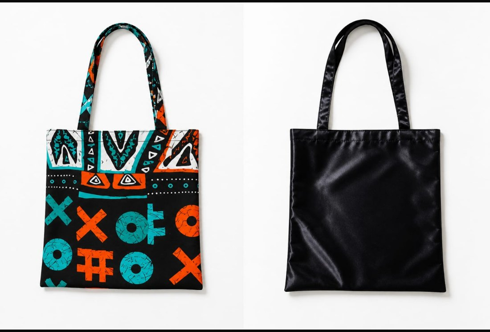
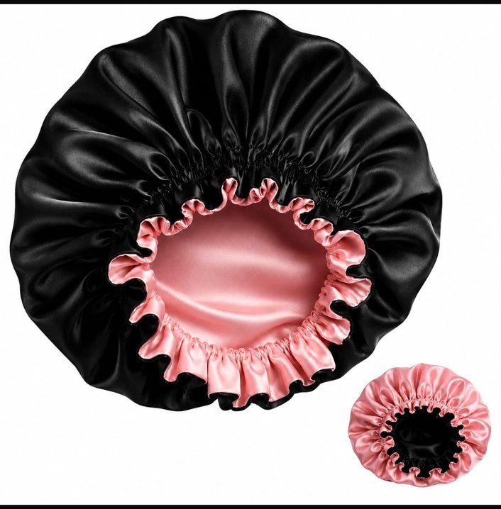

01
Find your favorite
Browse our handmade collection and discover the pieces that catch your eye.
Handmade bonnets, aprons, and tote bags crafted in Monrovia. Quality you can feel. Styles you'll love.

Small details make a big difference. Explore our collection, pick your favorites and message us to order.
Every piece is handmade. Colors and styles may vary — message us for what is currently available.

Primo Collection, formerly known as Multi Stitch, creates useful pieces that make everyday moments feel special. From a soft bonnet at bedtime to a tote that follows you through the day, our collection is stitched with attention to detail in Monrovia, Liberia.
Made for real life. Made for your style.
Follow our journey on FacebookBrowse our handmade collection and discover the pieces that catch your eye.
Tap “Order on WhatsApp” and tell us the styles and colors you have in mind.
We’ll confirm availability, price, payment and pickup or delivery arrangements with you directly.
Have a question about colors, availability, or a custom piece? Send us a message.
Message us on WhatsApp